Správa databází
Po vytvoření připojení ho můžete vybrat kliknutím na akci Select Connection (Vybrat připojení) v mřížce připojení. Uvidíte, že připojení bude reprezentováno druhem vnější karty nazývané karta připojení (Connection Tab). A celá tato oblast se nazývá pracovní okno (Workspace Window).
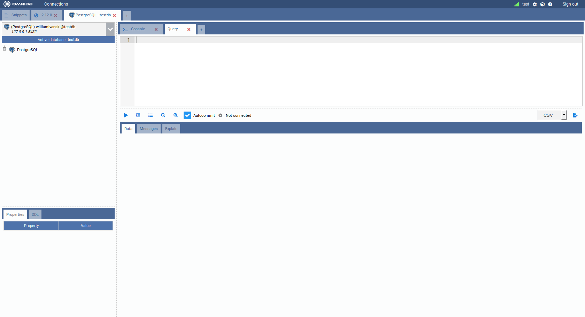
Sekce okna Workspace
Toto rozhraní má několik prvků:
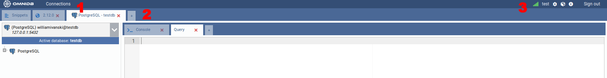
- 1) Connections (Připojení): Otevře vyskakovací okno s mřížkou Connections
- 2) Outer Tabs (Vnější karty): OmniDB umožňuje pracovat s několika databázemi současně. Každá databáze bude dostupná prostřednictvím vnější karty. Vnější karty mohou také obsahovat různé funkce nezávislé na připojení, jako je funkce Snippets
- 3) Options (Možnosti): Zobrazuje aktuálně přihlášeného uživatele, a pokud je uživatel superuživatel, také zobrazuje odkaz na správu uživatelů. Také zobrazuje odkazy na nastavení uživatele, nainstalované pluginy, historii dotazů, informace a odhlášení.
Vnější karta připojení
Vnější karta s názvem PostgreSQL – testdb se tak jmenuje kvůli aliasu
(PostgreSQL), který jsme zadali v připojení k databázi testdb. Tato karta je
vnější kartou připojení (Connection Outer Tab). Všimněte si malé karty s křížkem vedle
vnější karty PostgreSQL – testdb. Ta umožňuje vytvořit novou vnější kartu, která
bude automaticky vnější kartou připojení. Vnější karta Snippet je však
pevně daná a bude vždy první.
Nová vnější karta připojení bude vždy automaticky odkazovat na první připojení v seznamu vašich databázových připojení. Nebo, pokud jste klikli na akci Select Connection, bude odkazovat na vybrané připojení. Podívejme se na prvky uvnitř této karty:
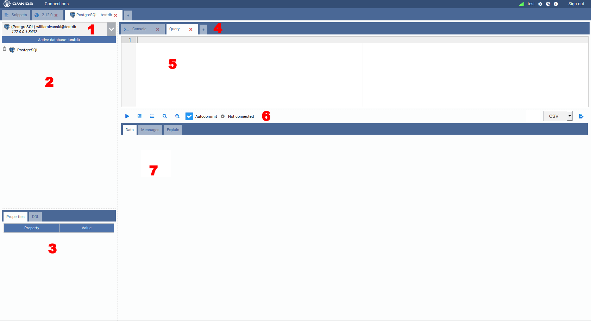
- 1) Connection Selector (Výběr připojení): Zobrazuje všechna připojení a umožňuje uživateli vybrat aktuální
- 2) Tree of Structures (Strom struktur): Zobrazuje hierarchický strom, ve kterém lze procházet databázové prvky
- 3) Properties and DDL Panels (Panely Vlastnosti a DDL): Zobrazují vlastnosti a DDL aktuálně vybraného uzlu ve stromovém zobrazení
- 4) Inner Tabs (Vnitřní karty): Umožňují uživateli provádět akce v aktuální databázi. Existuje několik druhů vnitřních karet pro aktuální databázi. Kliknutím na poslední malou kartu s křížkem lze přidat novou kartu. Nová karta může být karta dotazu (Query Tab), karta konzole (Console Tab), monitorovací panel (Monitoring Dashboard) nebo Backends
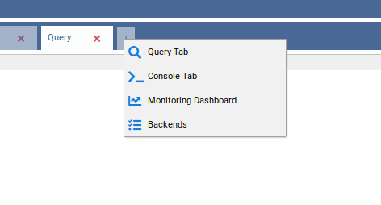
- 5) Inner Tab Content (Obsah vnitřní karty): Může se lišit podle druhu vnitřní karty. Obrázek zobrazuje kartu dotazu a v tomto případě bude obsahem SQL editor se zvýrazněním syntaxe, automatickým doplňováním a funkcí najít a nahradit
- 6) Inner Tab Actions (Akce vnitřní karty): Mohou se lišit podle druhu vnitřní karty. U karty dotazu jsou to Run (Spustit), Indent SQL (Odsadit SQL), Command History (Historie příkazů), Explain, Explain Analyze, Autocommit a Export Data (Exportovat data)
- 7) Inner Tab Results (Výsledky vnitřní karty): U karty dotazu se po kliknutí na
tlačítko Execute nebo po stisknutí klávesové zkratky pro spuštění (
Alt-Q) zobrazí mřížka s výsledky dotazu na podkartě Data. Pokud dotaz volá funkci, která vyvolává zprávy, zobrazí se na podkartě Messages. Pokud jste místo Run klikli na Explain nebo Explain Analyze, plán dotazu se zobrazí na podkartě Explain.
Práce s databázemi
Podívejte se na výběr připojení. OmniDB vždy ukazuje na první dostupné připojení, ale můžete ho změnit kliknutím na výběr.
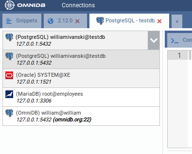
Vyberte připojení PostgreSQL. Nyní přejděte ke stromu hned pod výběrem a kliknutím rozbalte kořenový uzel PostgreSQL.
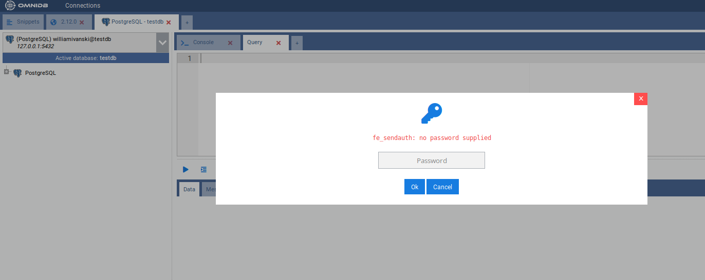
Mějte na paměti, že každých 30 minut, kdy neprovedete žádnou akci na databázi, se zobrazí vyskakovací okno Authentication (Ověření), což znamená, že heslo, které OmniDB zašifrovala a uložila do paměti, nyní vypršelo. Jak bylo vysvětleno dříve, je to důležité pro bezpečnost vaší databáze. Po zadání správného hesla uvidíte, že uzel PostgreSQL nyní zobrazuje verzi PostgreSQL a byl také rozbalen, přičemž zobrazuje aktuální připojení k databázi a také prvky platné pro celou instanci: Databases (Databáze), Tablespaces (Tabulkové prostory), Roles (Role) a Replication Slots (Replikační sloty).
Můžete se připojit k jedné databázi PostgreSQL a pomocí stejného připojení se připojit k dalším databázím ve stejné instanci PostgreSQL. Aktuálně aktivní databáze bude zobrazena pod výběrem připojení.
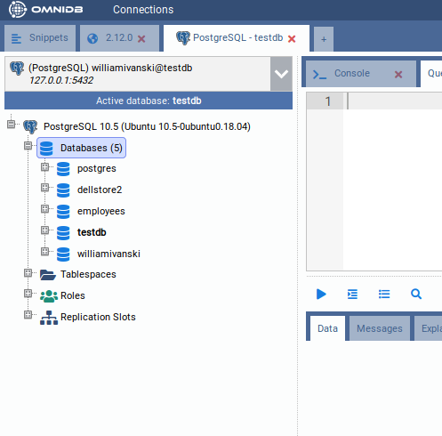
Pro připojení k jiné databázi rozbalte uzel odpovídající dané databázi. Zobrazí se vyskakovací okno s dotazem, zda opravdu chcete změnit aktivní databázi.
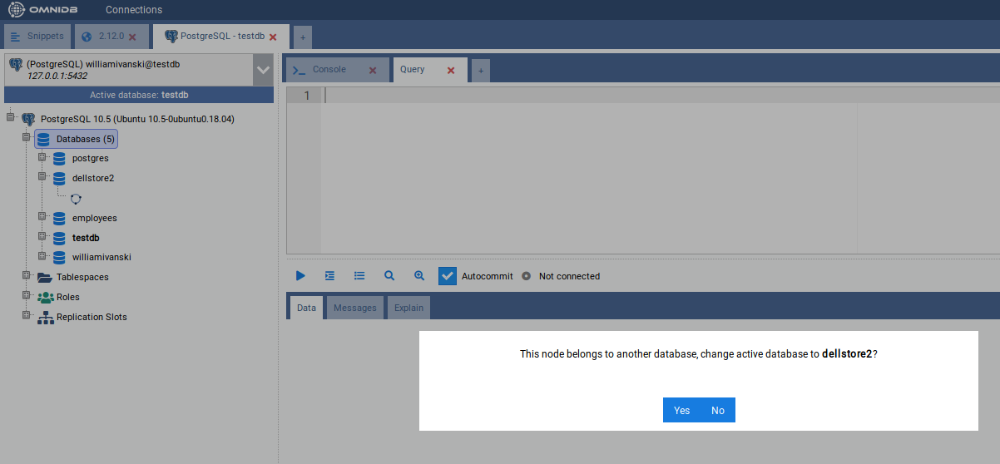
Klikněte na Yes (Ano) a OmniDB změní aktivní databázi na databázi, kterou jste zvolili. Projeví se to na indikátoru Active database (Aktivní databáze) a také na názvu vnější karty.
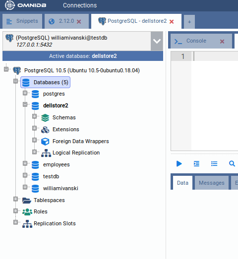
Nyní rozbalte uzel Schemas (Schémata). Uvidíte všechna schémata v aktuální
databázi (v případě PostgreSQL nejsou zobrazena schémata TOAST a dočasná schémata).
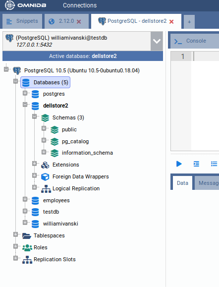
Nyní klikněte na rozbalení schématu public. Uvidíte různé druhy
prvků obsažených v tomto schématu.
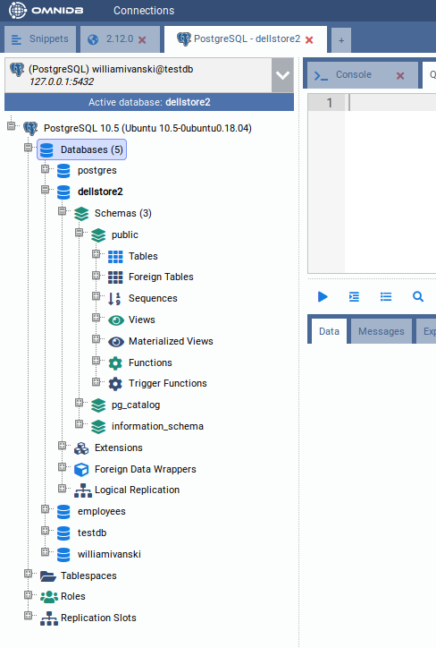
Nyní klikněte na rozbalení uzlu Tables (Tabulky) a uvidíte všechny tabulky obsažené
ve schématu public. Rozbalte libovolnou tabulku a uvidíte její sloupce, primární klíč,
cizí klíče, omezení, indexy, pravidla, triggery a partice.
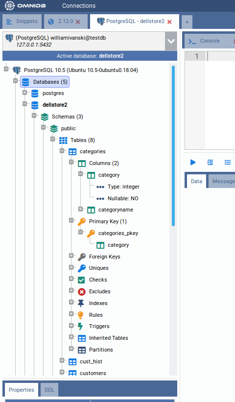
Chcete-li zobrazit záznamy uvnitř tabulky, klikněte na ni pravým tlačítkem a zvolte *Data Actions
Query Data*.
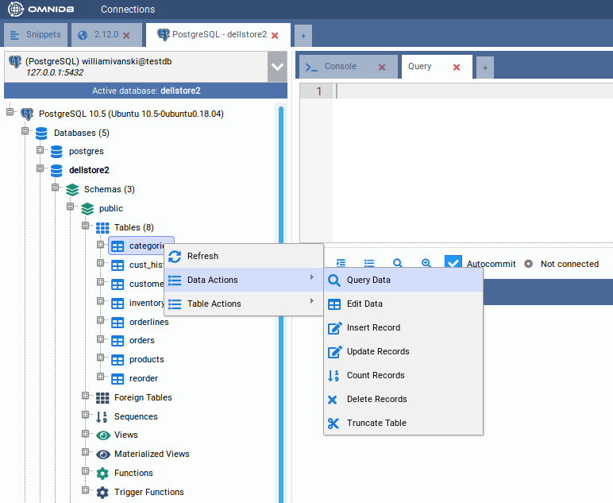
Všimněte si, že OmniDB otevře nový SQL editor s jednoduchým dotazem pro výpis záznamů tabulky. Záznamy se zobrazují v mřížce přímo pod editorem. Tuto mřížku lze ovládat klávesnicí, jako kdybyste používali tabulkový procesor. Data z jednotlivých buněk nebo bloku buněk (které lze vybrat klávesnicí nebo myší) lze také kopírovat a vložit do libovolného tabulkového procesoru.
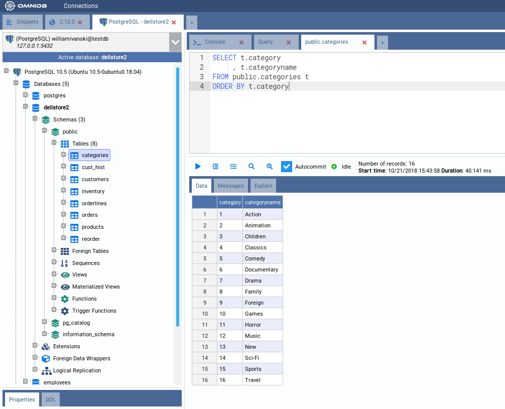
Dotaz v SQL editoru můžete upravovat a psát jednoduché i složitější
dotazy. Pro spuštění klikněte na tlačítko akce nebo stiskněte klávesovou zkratku Alt-Q.
Pokud výsledky přesáhnou 100 záznamů, zobrazí se další tlačítka Fetch More
(Načíst další) a Fetch All (Načíst vše). Více podrobností v dalších kapitolách.
Práce s více kartami v rámci stejného připojení
V rámci jednoho připojení můžete vytvořit několik vnitřních karet dotazu kliknutím na poslední malou kartu s křížkem a následným výběrem Query Tab (Karta dotazu).
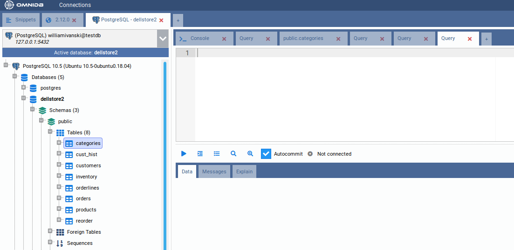
V OmniDB můžete provádět několik SQL příkazů a procedur paralelně. Během jejich vykonávání se na kartě zobrazí ikona indikující jejich aktuální stav. Pokud je nějaký proces dokončen a nejste zrovna na jeho kartě, tato karta zobrazí zelenou ikonu indikující, že rutina, která se na ní vykonávala, je nyní dokončena.
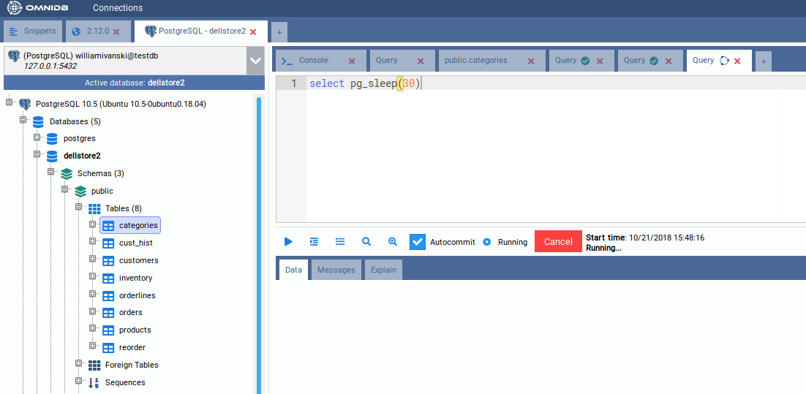
Kliknutím na tlačítko Cancel (Zrušit) můžete zrušit proces běžící uvnitř databáze.
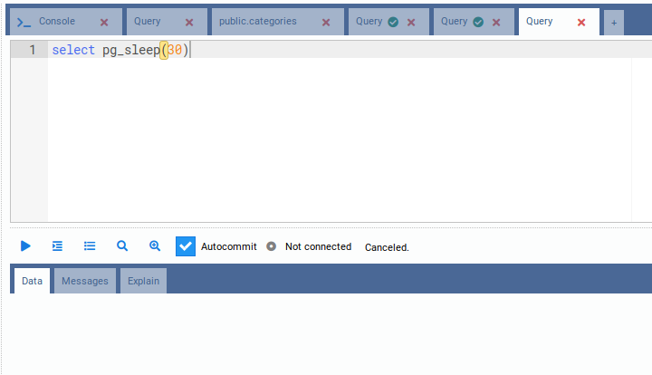
Kartu také můžete přetáhnout myší (drag and drop) a změnit tak její pořadí. To funguje u vnitřních i vnějších karet.
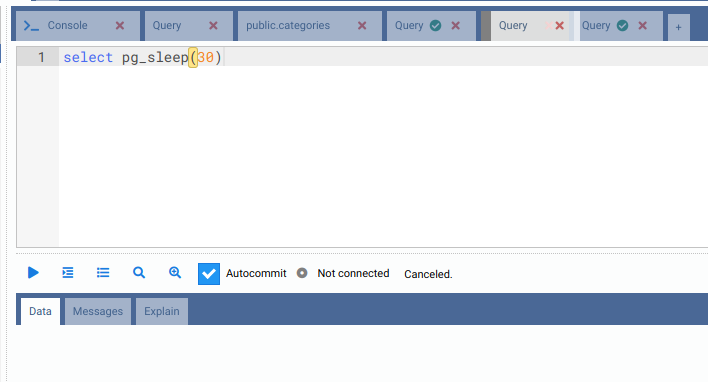
Kromě toho můžete pro správu vnitřních karet (SQL dotaz) použít klávesové zkratky. Toto jsou výchozí zkratky na Windows/Linuxu (macOS nahrazuje Alt klávesou Ctrl); všechny lze přenastavit na kartě Zkratky v dialogu Nastavení:
- Alt-I: Vloží novou vnitřní kartu
- Alt-Shift-Q: Odstraní aktuální vnitřní kartu
- Alt-O: Přepne fokus na vnitřní kartu vlevo
- Alt-P: Přepne fokus na vnitřní kartu vpravo
Pro vnější karty (Připojení) v současné době neexistují žádné klávesové zkratky — pro ně použijte přetažení myší (drag-and-drop) nebo myš.
Všechny karty SQL dotazu se automaticky ukládají při každém spuštění. I když zavřete okno OmniDB nebo kartu prohlížeče, jsou již uloženy v uživatelské databázi OmniDB. Automaticky se obnoví při dalším spuštění OmniDB (pokud používáte aplikaci), při otevření v jiném okně prohlížeče (pokud používáte server), nebo i pokud jste klikli na okno Connections (Připojení) nebo se odhlásili. Odstranění vnější nebo vnitřní karty přes rozhraní ji trvale smaže, takže se již neobnoví.